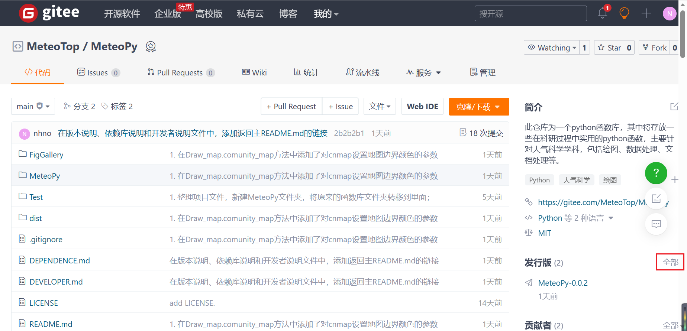
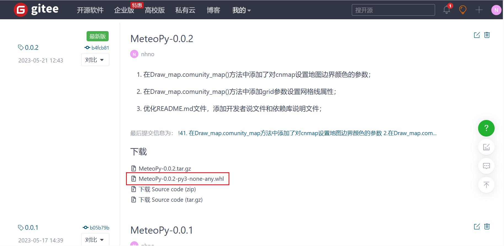
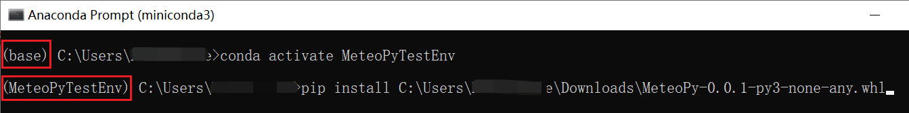

MeteoPy库如何安装
首先进入本函数库的开源官网：https://gitee.com/MeteoTop/MeteoPy；
在右侧栏找到“发行版”标签，点击进入发行版；

选择你所需要下载的版本，点击对应版本下载
.whl文件；
本地安装MeteoPy库；
如果像直接将MeteoPy库安装到本地的主python环境中，则打开cmd命令行，
pip install + 刚刚下载的whl文件地址；
如果想安装在conda的某个虚拟环境中，则先打开
Anaconda Prompt，然后进入目标虚拟环境conda activate **，最后再pip install + 刚刚下载的whl文件地址;

注意：不要，不要，不要
不要直接pip install MeteoPy，因为在PyPI官网上有同名函数，所有直接下载的并不是此MetetoPy库